Research slides · Measurements and validation
All 14 requested command settings are recorded. Each command has a reference-feedback run and an estimated-feedback run, with identical verified initial physical states, observations, scene configuration, and policy checkpoint within the pair.
Straight commands use a 5 × 2 × 0.3 m sand bed; turning commands use a 3 × 3 × 0.3 m sand bed. The native 0.04 m MPM grid, sand parameters, particle color, jitter, robot actuation, reset noise, and renderer settings are retained. Straight runs start near the opposite sand-bed edge; turning runs start near the sand-bed center. The nominal robot root starts at z = 0.76 m above the initial sand surface at z = 0, retaining native reset noise. Commands are active from time zero. The workspace includes the rigid approach platform, so backward motion can leave the sand while remaining inside the supported workspace.
MuJoCo-Warp advances the robot. MPM advances the particles in both runs. The analytical estimator uses 200 solver iterations and effective particle mass multiplier 100; this experiment tests material-force feedback, not a learned particle simulator. In reference-feedback runs, the estimate is diagnostic only. In estimated-feedback runs, the estimate is applied to the robot during the next 5 ms coupling interval.
Reference feedback reached the requested 8 s in 7 of 14 completed command trials; estimated feedback did so in 7. Native termination reasons and contact durations are listed below. Every early stop is a workspace-boundary exit; no orientation-limit, low-height, or nonfinite-state termination is recorded. The −1 m/s straight runs include the rigid approach platform: material contact lasts 5.61 s with reference feedback and 6.03 s with estimated feedback; direct rigid support occurs for 2.40 s and 1.94 s respectively. The full 8 s should not be read as continuous sand walking.
Completing a short rollout does not imply accurate force reconstruction. Force spikes remain a limitation: the largest instantaneous per-foot vector error is 1622 N. At that same foot and time, the estimate has magnitude 1887 N and the MPM reference has magnitude 268 N (command vx = 1 m/s, wz = 0 rad/s; reference trajectory at 0.990 s). Per-case horizontal-force plots show errors that vertical-force plots alone can hide.
Each force estimate is compared with the MPM force calculated on that same trajectory. Active-contact RMSE uses steps when either foot's reference material-force magnitude exceeds 20 N, averaging squared vector error over both feet and those steps. Measured velocities are averages during those same material-contact intervals: root-COM forward velocity in the robot root-link axes and world-z angular velocity. Robot velocity is sampled before each policy update and held across its four physics intervals. Contact durations for material and rigid support can overlap. A completed short run is not evidence of general robustness; workspace exits and native fall terminations are reported explicitly.
| Command [m/s, rad/s] | Sand footprint [m] | Reference duration / outcome | Estimator error on reference-driven trajectory [N] | Reference measured vx, wz [m/s, rad/s] | Estimated duration / outcome | Estimator error on estimated-feedback trajectory [N] | Estimated measured vx, wz [m/s, rad/s] |
|---|---|---|---|---|---|---|---|
| vx 0.5, wz 0 | 5 × 2 | 8.00 s Reached requested duration | 59.20 7.96 s material contact 0.00 s direct rigid support | 0.46, 0.01 | 8.00 s Reached requested duration | 92.72 7.95 s material contact 0.00 s direct rigid support | 0.45, 0.01 |
| vx 1, wz 0 | 5 × 2 | 4.74 s terminated: workspace boundary | 96.66 4.67 s material contact 0.00 s direct rigid support | 0.88, -0.00 | 5.60 s terminated: workspace boundary | 145.73 5.53 s material contact 0.03 s direct rigid support | 0.74, -0.02 |
| vx -0.5, wz 0 | 5 × 2 | 8.00 s Reached requested duration | 53.46 7.97 s material contact 0.00 s direct rigid support | -0.39, -0.00 | 8.00 s Reached requested duration | 46.38 7.98 s material contact 0.00 s direct rigid support | -0.37, 0.00 |
| vx -1, wz 0 | 5 × 2 | 8.00 s Reached requested duration | 75.93 5.61 s material contact 2.40 s direct rigid support | -0.80, 0.02 | 8.00 s Reached requested duration | 77.09 6.03 s material contact 1.94 s direct rigid support | -0.75, 0.02 |
| vx 0, wz 0.5 | 3 × 3 | 8.00 s Reached requested duration | 29.93 8.00 s material contact 0.00 s direct rigid support | 0.01, 0.48 | 8.00 s Reached requested duration | 29.33 8.00 s material contact 0.00 s direct rigid support | 0.00, 0.50 |
| vx 0, wz 1 | 3 × 3 | 8.00 s Reached requested duration | 38.26 8.00 s material contact 0.00 s direct rigid support | 0.03, 1.00 | 8.00 s Reached requested duration | 48.47 8.00 s material contact 0.00 s direct rigid support | 0.02, 1.00 |
| vx 0.5, wz 0.5 | 3 × 3 | 4.18 s terminated: workspace boundary | 67.71 4.16 s material contact 0.00 s direct rigid support | 0.46, 0.50 | 4.88 s terminated: workspace boundary | 89.64 4.86 s material contact 0.00 s direct rigid support | 0.42, 0.51 |
| vx 0.5, wz 1 | 3 × 3 | 8.00 s Reached requested duration | 72.10 7.98 s material contact 0.00 s direct rigid support | 0.47, 1.00 | 8.00 s Reached requested duration | 99.58 7.98 s material contact 0.00 s direct rigid support | 0.41, 1.01 |
| vx 1, wz 0.5 | 3 × 3 | 1.90 s terminated: workspace boundary | 97.05 1.88 s material contact 0.00 s direct rigid support | 0.74, 0.49 | 2.18 s terminated: workspace boundary | 127.45 2.16 s material contact 0.00 s direct rigid support | 0.71, 0.50 |
| vx 1, wz 1 | 3 × 3 | 2.28 s terminated: workspace boundary | 120.20 2.27 s material contact 0.00 s direct rigid support | 0.75, 1.00 | 2.34 s terminated: workspace boundary | 119.30 2.32 s material contact 0.00 s direct rigid support | 0.71, 0.97 |
| vx -0.5, wz 0.5 | 3 × 3 | 3.36 s terminated: workspace boundary | 50.40 3.36 s material contact 0.00 s direct rigid support | -0.37, 0.51 | 3.24 s terminated: workspace boundary | 54.18 3.23 s material contact 0.00 s direct rigid support | -0.37, 0.52 |
| vx -0.5, wz 1 | 3 × 3 | 8.00 s Reached requested duration | 56.77 7.99 s material contact 0.00 s direct rigid support | -0.39, 1.02 | 8.00 s Reached requested duration | 49.80 7.99 s material contact 0.00 s direct rigid support | -0.37, 1.02 |
| vx -1, wz 0.5 | 3 × 3 | 2.10 s terminated: workspace boundary | 78.70 2.08 s material contact 0.00 s direct rigid support | -0.70, 0.55 | 2.14 s terminated: workspace boundary | 67.85 2.12 s material contact 0.00 s direct rigid support | -0.67, 0.52 |
| vx -1, wz 1 | 3 × 3 | 1.64 s terminated: workspace boundary | 80.56 1.62 s material contact 0.00 s direct rigid support | -0.67, 1.04 | 1.66 s terminated: workspace boundary | 85.88 1.63 s material contact 0.00 s direct rigid support | -0.64, 0.98 |
Shared simulation interval 0–8.00 s. The encoded clip includes the final displayed frame. Full reference video · Full estimated-feedback video.
Reference trajectory: mean direct rigid floor/platform vertical support on both feet is 0.0 N during material contact; either foot's rigid-support force magnitude exceeds 20 N in 0.0% of those intervals. Estimated trajectory: mean direct rigid floor/platform vertical support on both feet is 0.0 N during material contact; either foot's rigid-support force magnitude exceeds 20 N in 0.0% of those intervals.
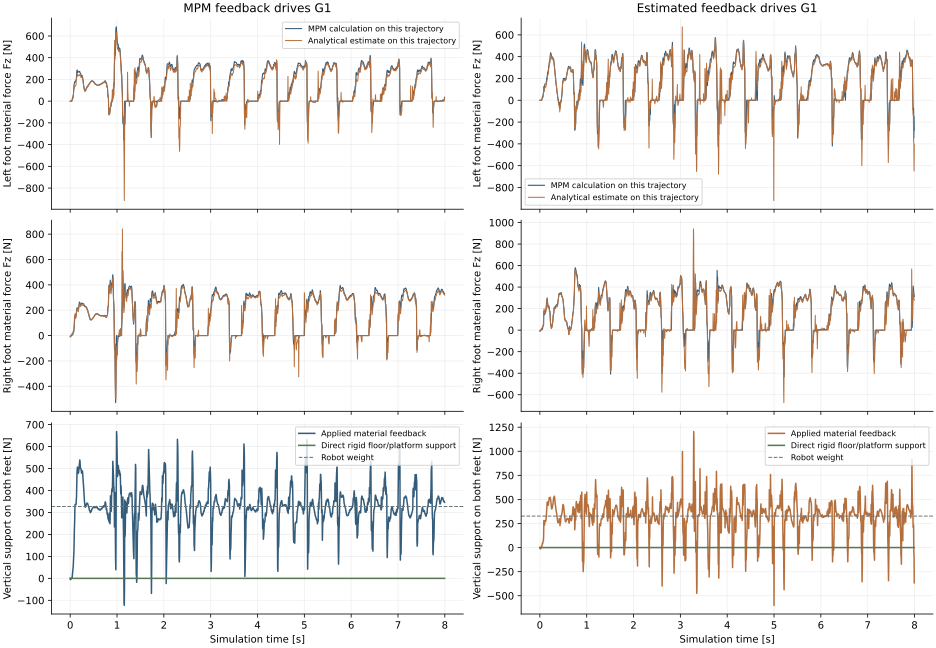
Top rows compare estimated and MPM material-on-foot force within each trajectory. Bottom row separates applied material feedback from direct rigid floor/platform force, sampled after the last rigid substep.
Reference trajectory: largest instantaneous foot-force error 671 N at 1.160 s (left foot); estimated force magnitude 695 N, same-step MPM magnitude 35 N. Estimated trajectory: largest instantaneous foot-force error 1141 N at 2.805 s (right foot); estimated force magnitude 1141 N, same-step MPM magnitude 0 N.
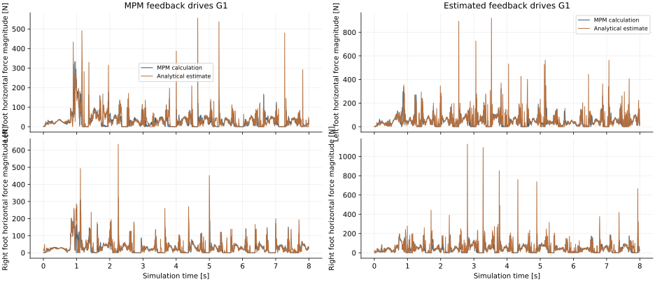
Horizontal force is sqrt(Fx² + Fy²), evaluated within each trajectory. It is separate from vertical support force.
| Trajectory / foot | Force-vector RMSE [N] | Foot-COM torque-vector RMSE [N m] |
|---|---|---|
| reference / left | 62.63 | 4.48 |
| reference / right | 55.57 | 4.46 |
| estimated / left | 94.59 | 6.63 |
| estimated / right | 90.82 | 5.98 |
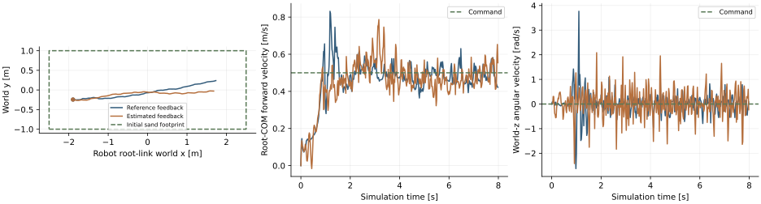
Shared simulation interval 0–4.72 s. The encoded clip includes the final displayed frame. Full reference video · Full estimated-feedback video.
Reference trajectory: mean direct rigid floor/platform vertical support on both feet is 0.0 N during material contact; either foot's rigid-support force magnitude exceeds 20 N in 0.0% of those intervals. Estimated trajectory: mean direct rigid floor/platform vertical support on both feet is 1.3 N during material contact; either foot's rigid-support force magnitude exceeds 20 N in 0.5% of those intervals.
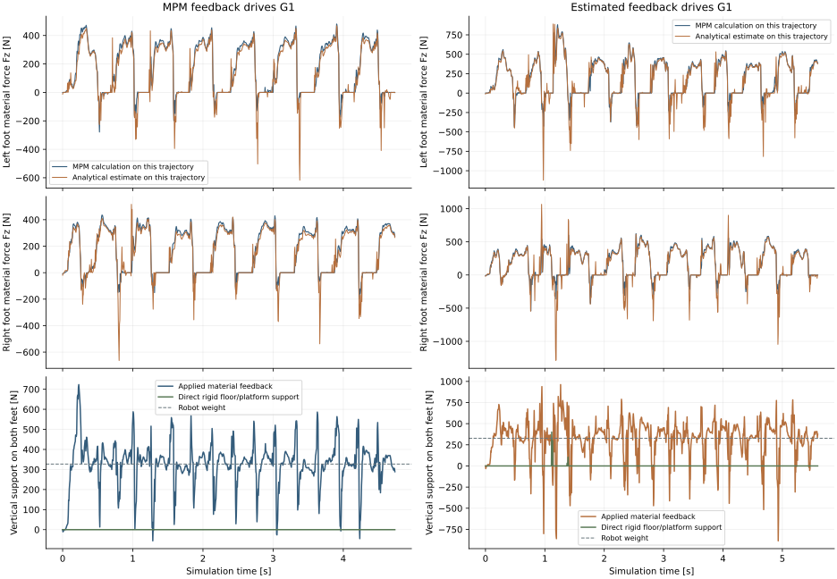
Top rows compare estimated and MPM material-on-foot force within each trajectory. Bottom row separates applied material feedback from direct rigid floor/platform force, sampled after the last rigid substep.
Reference trajectory: largest instantaneous foot-force error 1622 N at 0.990 s (right foot); estimated force magnitude 1887 N, same-step MPM magnitude 268 N. Estimated trajectory: largest instantaneous foot-force error 1330 N at 3.855 s (left foot); estimated force magnitude 1330 N, same-step MPM magnitude 0 N.
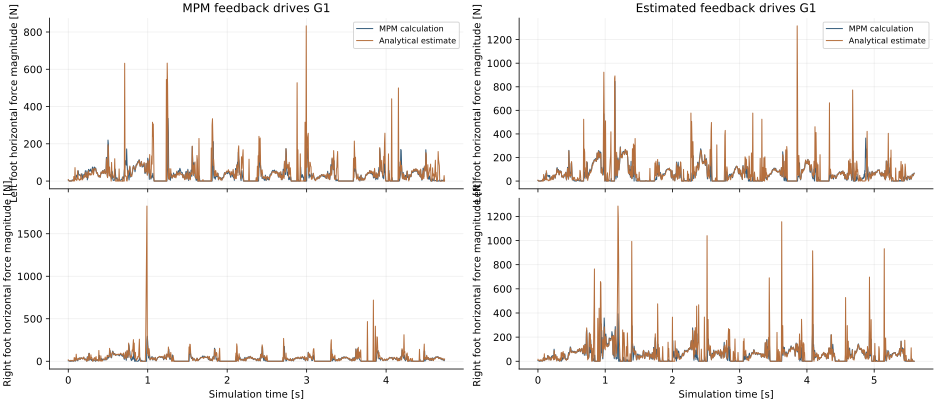
Horizontal force is sqrt(Fx² + Fy²), evaluated within each trajectory. It is separate from vertical support force.
| Trajectory / foot | Force-vector RMSE [N] | Foot-COM torque-vector RMSE [N m] |
|---|---|---|
| reference / left | 87.66 | 5.11 |
| reference / right | 104.88 | 5.50 |
| estimated / left | 134.64 | 8.88 |
| estimated / right | 156.03 | 10.42 |
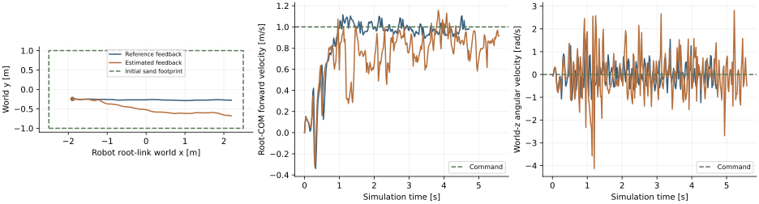
Shared simulation interval 0–8.00 s. The encoded clip includes the final displayed frame. Full reference video · Full estimated-feedback video.
Reference trajectory: mean direct rigid floor/platform vertical support on both feet is 0.0 N during material contact; either foot's rigid-support force magnitude exceeds 20 N in 0.0% of those intervals. Estimated trajectory: mean direct rigid floor/platform vertical support on both feet is 0.0 N during material contact; either foot's rigid-support force magnitude exceeds 20 N in 0.0% of those intervals.
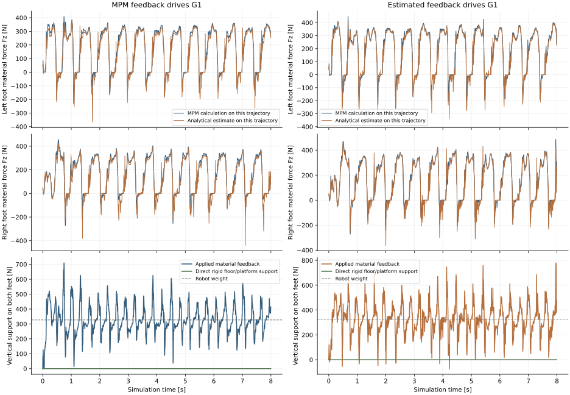
Top rows compare estimated and MPM material-on-foot force within each trajectory. Bottom row separates applied material feedback from direct rigid floor/platform force, sampled after the last rigid substep.
Reference trajectory: largest instantaneous foot-force error 439 N at 5.290 s (right foot); estimated force magnitude 439 N, same-step MPM magnitude 0 N. Estimated trajectory: largest instantaneous foot-force error 370 N at 4.225 s (left foot); estimated force magnitude 376 N, same-step MPM magnitude 8 N.
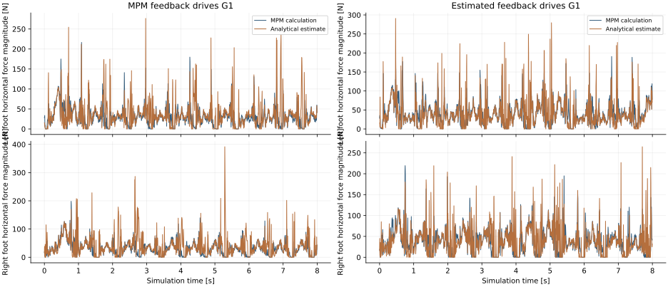
Horizontal force is sqrt(Fx² + Fy²), evaluated within each trajectory. It is separate from vertical support force.
| Trajectory / foot | Force-vector RMSE [N] | Foot-COM torque-vector RMSE [N m] |
|---|---|---|
| reference / left | 49.40 | 4.19 |
| reference / right | 57.24 | 4.19 |
| estimated / left | 45.93 | 4.03 |
| estimated / right | 46.84 | 4.17 |
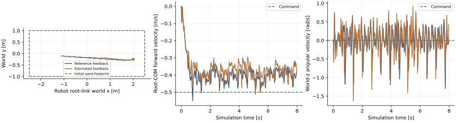
Shared simulation interval 0–8.00 s. The encoded clip includes the final displayed frame. Full reference video · Full estimated-feedback video.
Reference trajectory: mean direct rigid floor/platform vertical support on both feet is 6.3 N during material contact; either foot's rigid-support force magnitude exceeds 20 N in 2.0% of those intervals. Estimated trajectory: mean direct rigid floor/platform vertical support on both feet is 9.9 N during material contact; either foot's rigid-support force magnitude exceeds 20 N in 2.1% of those intervals.
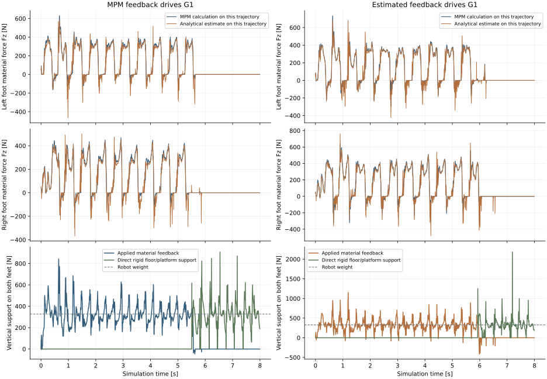
Top rows compare estimated and MPM material-on-foot force within each trajectory. Bottom row separates applied material feedback from direct rigid floor/platform force, sampled after the last rigid substep.
Reference trajectory: largest instantaneous foot-force error 888 N at 0.985 s (left foot); estimated force magnitude 925 N, same-step MPM magnitude 45 N. Estimated trajectory: largest instantaneous foot-force error 574 N at 5.985 s (right foot); estimated force magnitude 724 N, same-step MPM magnitude 174 N.
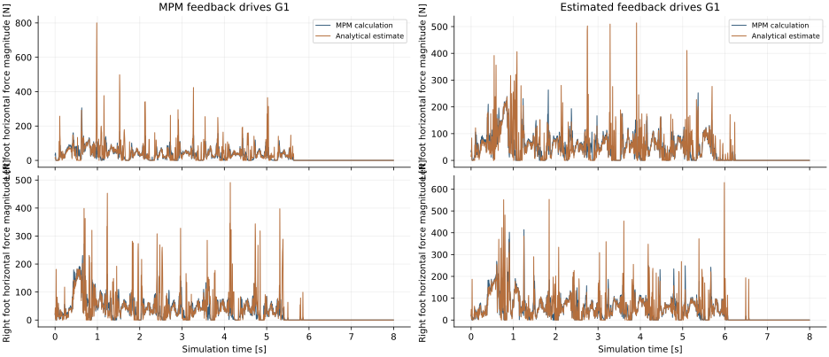
Horizontal force is sqrt(Fx² + Fy²), evaluated within each trajectory. It is separate from vertical support force.
| Trajectory / foot | Force-vector RMSE [N] | Foot-COM torque-vector RMSE [N m] |
|---|---|---|
| reference / left | 75.72 | 5.88 |
| reference / right | 76.14 | 5.58 |
| estimated / left | 76.27 | 5.70 |
| estimated / right | 77.91 | 7.20 |
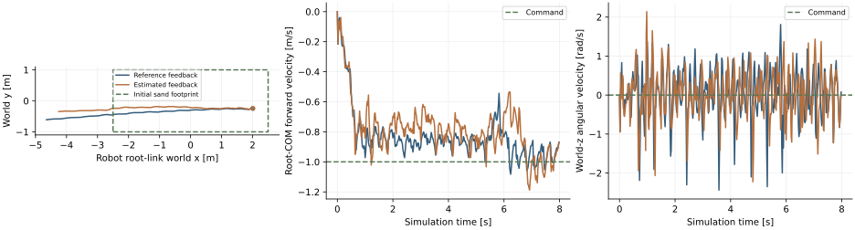
Shared simulation interval 0–8.00 s. The encoded clip includes the final displayed frame. Full reference video · Full estimated-feedback video.
Reference trajectory: mean direct rigid floor/platform vertical support on both feet is 0.0 N during material contact; either foot's rigid-support force magnitude exceeds 20 N in 0.0% of those intervals. Estimated trajectory: mean direct rigid floor/platform vertical support on both feet is 0.0 N during material contact; either foot's rigid-support force magnitude exceeds 20 N in 0.0% of those intervals.
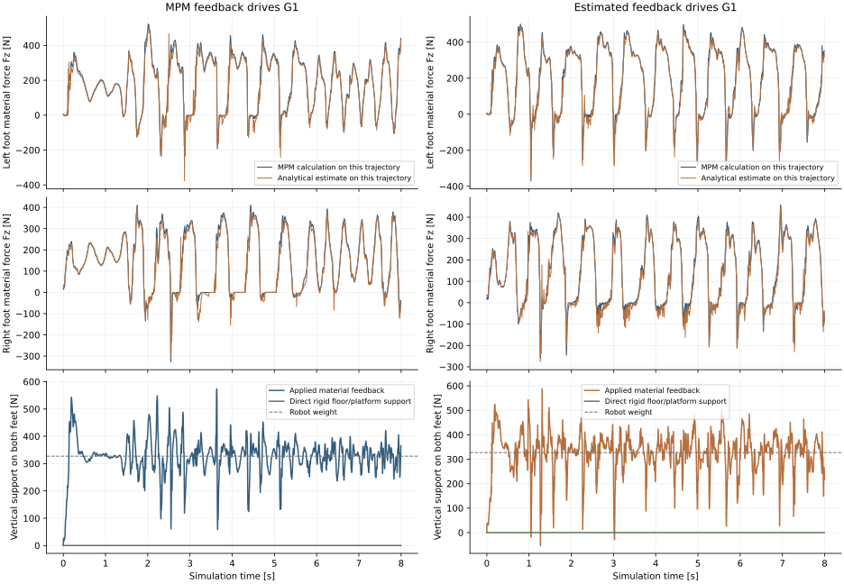
Top rows compare estimated and MPM material-on-foot force within each trajectory. Bottom row separates applied material feedback from direct rigid floor/platform force, sampled after the last rigid substep.
Reference trajectory: largest instantaneous foot-force error 326 N at 2.760 s (right foot); estimated force magnitude 327 N, same-step MPM magnitude 1 N. Estimated trajectory: largest instantaneous foot-force error 217 N at 0.975 s (right foot); estimated force magnitude 380 N, same-step MPM magnitude 168 N.
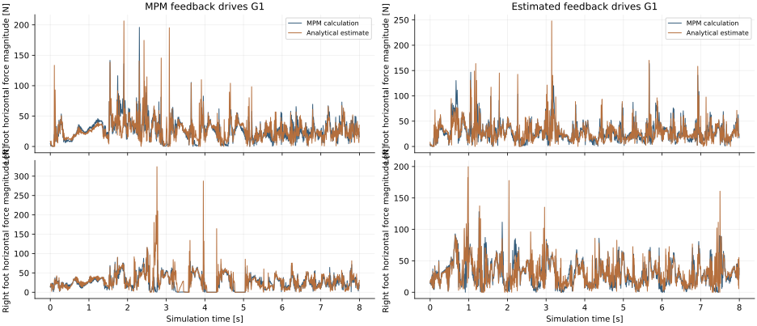
Horizontal force is sqrt(Fx² + Fy²), evaluated within each trajectory. It is separate from vertical support force.
| Trajectory / foot | Force-vector RMSE [N] | Foot-COM torque-vector RMSE [N m] |
|---|---|---|
| reference / left | 30.05 | 3.10 |
| reference / right | 29.81 | 2.42 |
| estimated / left | 28.77 | 3.14 |
| estimated / right | 29.88 | 2.78 |
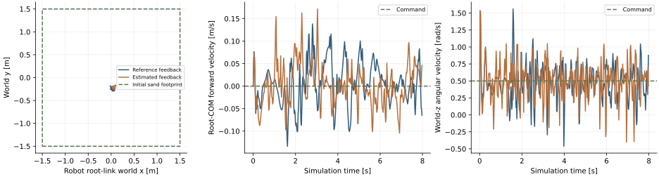
Shared simulation interval 0–8.00 s. The encoded clip includes the final displayed frame. Full reference video · Full estimated-feedback video.
Reference trajectory: mean direct rigid floor/platform vertical support on both feet is 0.0 N during material contact; either foot's rigid-support force magnitude exceeds 20 N in 0.0% of those intervals. Estimated trajectory: mean direct rigid floor/platform vertical support on both feet is 0.0 N during material contact; either foot's rigid-support force magnitude exceeds 20 N in 0.0% of those intervals.
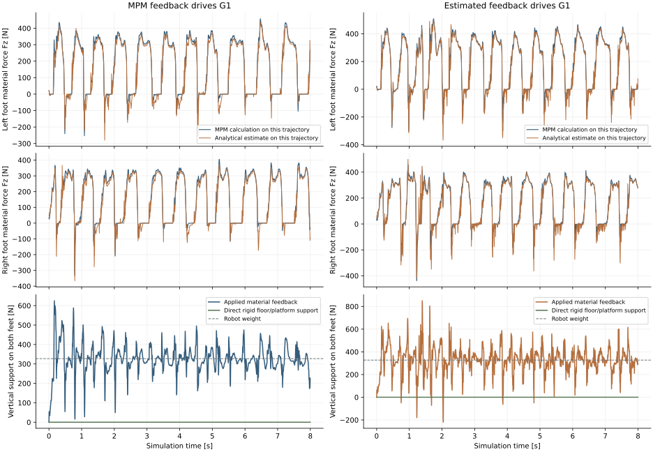
Top rows compare estimated and MPM material-on-foot force within each trajectory. Bottom row separates applied material feedback from direct rigid floor/platform force, sampled after the last rigid substep.
Reference trajectory: largest instantaneous foot-force error 352 N at 4.450 s (right foot); estimated force magnitude 360 N, same-step MPM magnitude 12 N. Estimated trajectory: largest instantaneous foot-force error 420 N at 2.215 s (left foot); estimated force magnitude 420 N, same-step MPM magnitude 0 N.
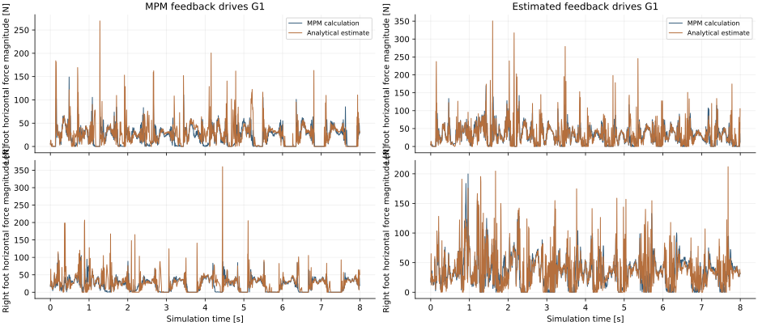
Horizontal force is sqrt(Fx² + Fy²), evaluated within each trajectory. It is separate from vertical support force.
| Trajectory / foot | Force-vector RMSE [N] | Foot-COM torque-vector RMSE [N m] |
|---|---|---|
| reference / left | 39.20 | 3.12 |
| reference / right | 37.30 | 2.78 |
| estimated / left | 49.15 | 4.04 |
| estimated / right | 47.78 | 4.17 |
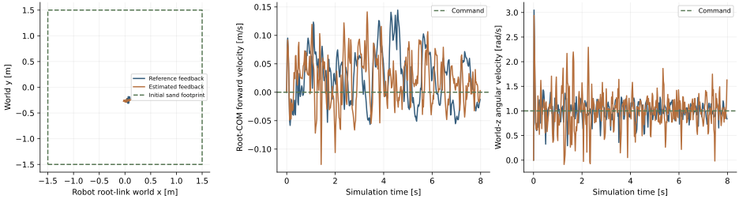
Shared simulation interval 0–4.16 s. The encoded clip includes the final displayed frame. Full reference video · Full estimated-feedback video.
Reference trajectory: mean direct rigid floor/platform vertical support on both feet is 0.0 N during material contact; either foot's rigid-support force magnitude exceeds 20 N in 0.0% of those intervals. Estimated trajectory: mean direct rigid floor/platform vertical support on both feet is 0.0 N during material contact; either foot's rigid-support force magnitude exceeds 20 N in 0.0% of those intervals.
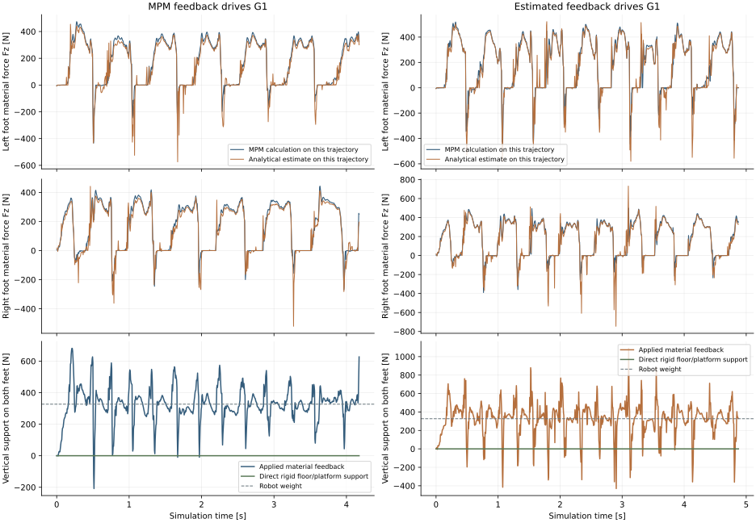
Top rows compare estimated and MPM material-on-foot force within each trajectory. Bottom row separates applied material feedback from direct rigid floor/platform force, sampled after the last rigid substep.
Reference trajectory: largest instantaneous foot-force error 867 N at 0.975 s (right foot); estimated force magnitude 909 N, same-step MPM magnitude 43 N. Estimated trajectory: largest instantaneous foot-force error 1081 N at 1.505 s (right foot); estimated force magnitude 1081 N, same-step MPM magnitude 0 N.
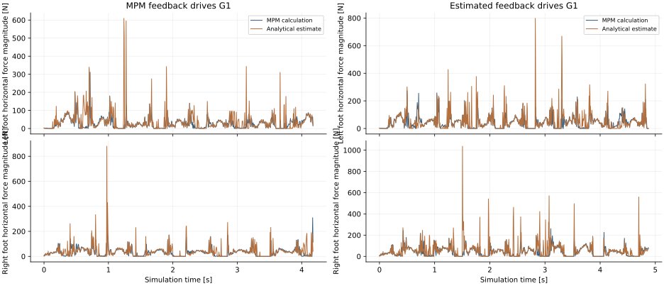
Horizontal force is sqrt(Fx² + Fy²), evaluated within each trajectory. It is separate from vertical support force.
| Trajectory / foot | Force-vector RMSE [N] | Foot-COM torque-vector RMSE [N m] |
|---|---|---|
| reference / left | 71.85 | 5.06 |
| reference / right | 63.31 | 4.40 |
| estimated / left | 82.48 | 6.27 |
| estimated / right | 96.26 | 6.20 |
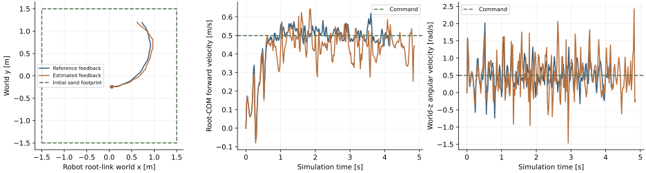
Shared simulation interval 0–8.00 s. The encoded clip includes the final displayed frame. Full reference video · Full estimated-feedback video.
Reference trajectory: mean direct rigid floor/platform vertical support on both feet is 0.0 N during material contact; either foot's rigid-support force magnitude exceeds 20 N in 0.0% of those intervals. Estimated trajectory: mean direct rigid floor/platform vertical support on both feet is 0.0 N during material contact; either foot's rigid-support force magnitude exceeds 20 N in 0.0% of those intervals.
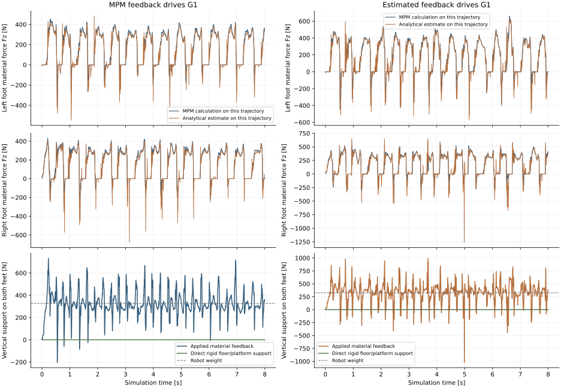
Top rows compare estimated and MPM material-on-foot force within each trajectory. Bottom row separates applied material feedback from direct rigid floor/platform force, sampled after the last rigid substep.
Reference trajectory: largest instantaneous foot-force error 1040 N at 0.980 s (right foot); estimated force magnitude 1066 N, same-step MPM magnitude 35 N. Estimated trajectory: largest instantaneous foot-force error 1364 N at 0.715 s (left foot); estimated force magnitude 1364 N, same-step MPM magnitude 0 N.
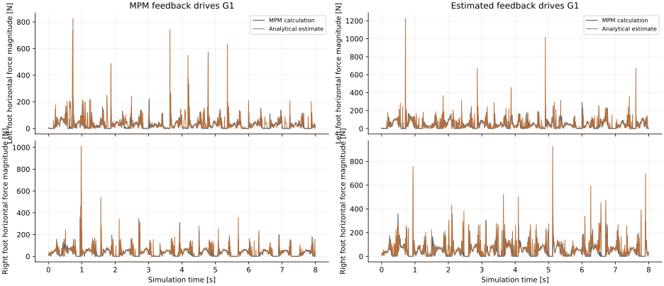
Horizontal force is sqrt(Fx² + Fy²), evaluated within each trajectory. It is separate from vertical support force.
| Trajectory / foot | Force-vector RMSE [N] | Foot-COM torque-vector RMSE [N m] |
|---|---|---|
| reference / left | 72.83 | 4.94 |
| reference / right | 71.37 | 4.84 |
| estimated / left | 87.45 | 5.80 |
| estimated / right | 110.39 | 7.65 |
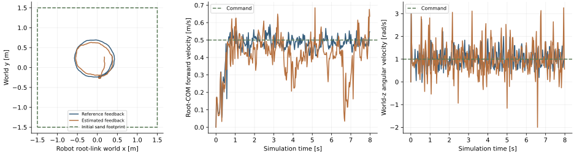
Shared simulation interval 0–1.88 s. The encoded clip includes the final displayed frame. Full reference video · Full estimated-feedback video.
Reference trajectory: mean direct rigid floor/platform vertical support on both feet is 0.0 N during material contact; either foot's rigid-support force magnitude exceeds 20 N in 0.0% of those intervals. Estimated trajectory: mean direct rigid floor/platform vertical support on both feet is 0.0 N during material contact; either foot's rigid-support force magnitude exceeds 20 N in 0.0% of those intervals.
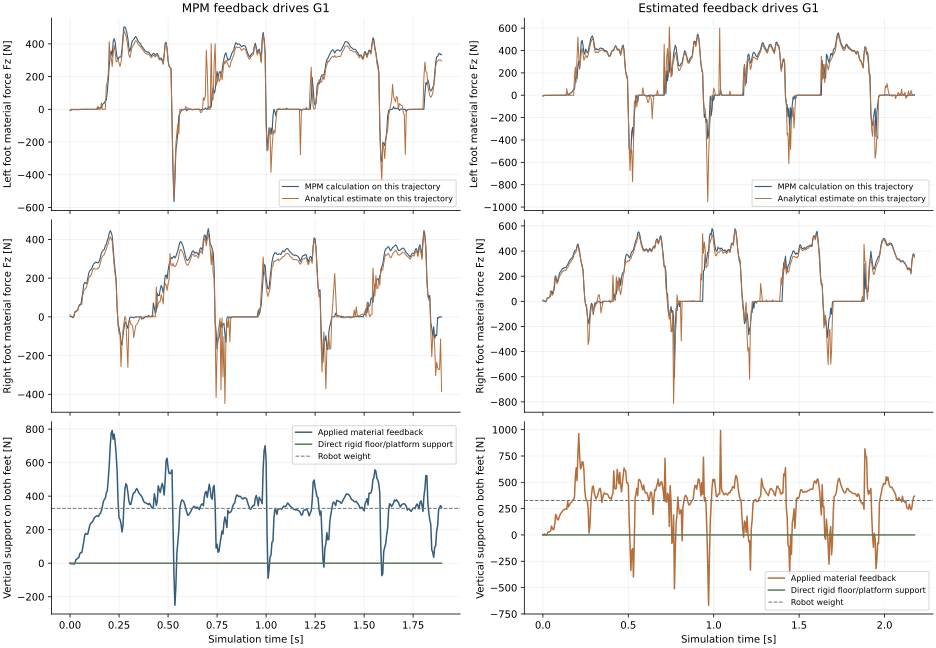
Top rows compare estimated and MPM material-on-foot force within each trajectory. Bottom row separates applied material feedback from direct rigid floor/platform force, sampled after the last rigid substep.
Reference trajectory: largest instantaneous foot-force error 938 N at 1.805 s (left foot); estimated force magnitude 938 N, same-step MPM magnitude 0 N. Estimated trajectory: largest instantaneous foot-force error 1232 N at 1.175 s (left foot); estimated force magnitude 1232 N, same-step MPM magnitude 0 N.
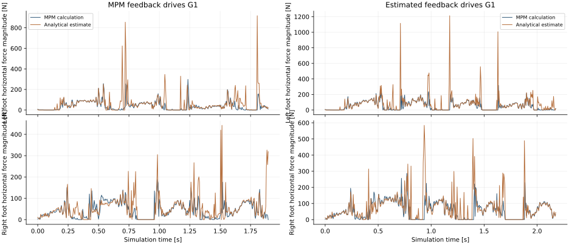
Horizontal force is sqrt(Fx² + Fy²), evaluated within each trajectory. It is separate from vertical support force.
| Trajectory / foot | Force-vector RMSE [N] | Foot-COM torque-vector RMSE [N m] |
|---|---|---|
| reference / left | 106.67 | 6.28 |
| reference / right | 86.37 | 6.04 |
| estimated / left | 144.43 | 8.98 |
| estimated / right | 107.83 | 7.10 |
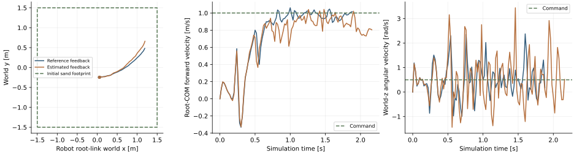
Shared simulation interval 0–2.28 s. The encoded clip includes the final displayed frame. Full reference video · Full estimated-feedback video.
Reference trajectory: mean direct rigid floor/platform vertical support on both feet is 0.0 N during material contact; either foot's rigid-support force magnitude exceeds 20 N in 0.0% of those intervals. Estimated trajectory: mean direct rigid floor/platform vertical support on both feet is 0.0 N during material contact; either foot's rigid-support force magnitude exceeds 20 N in 0.0% of those intervals.
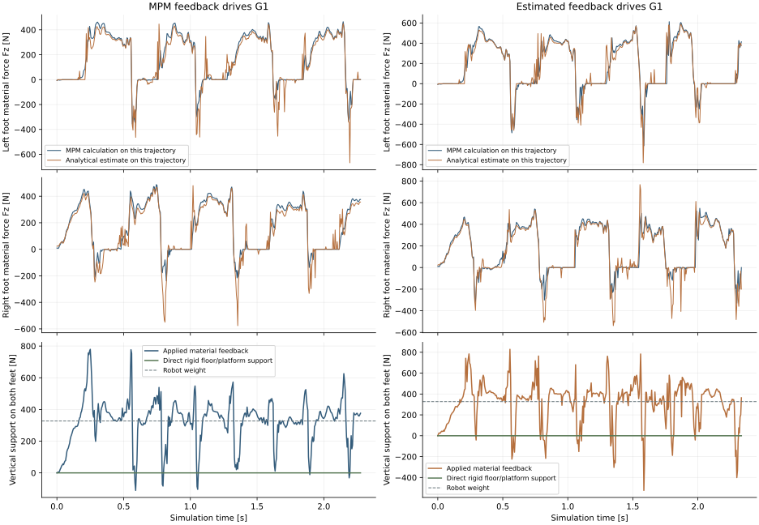
Top rows compare estimated and MPM material-on-foot force within each trajectory. Bottom row separates applied material feedback from direct rigid floor/platform force, sampled after the last rigid substep.
Reference trajectory: largest instantaneous foot-force error 1383 N at 1.005 s (right foot); estimated force magnitude 1383 N, same-step MPM magnitude 0 N. Estimated trajectory: largest instantaneous foot-force error 1357 N at 1.760 s (left foot); estimated force magnitude 1357 N, same-step MPM magnitude 0 N.
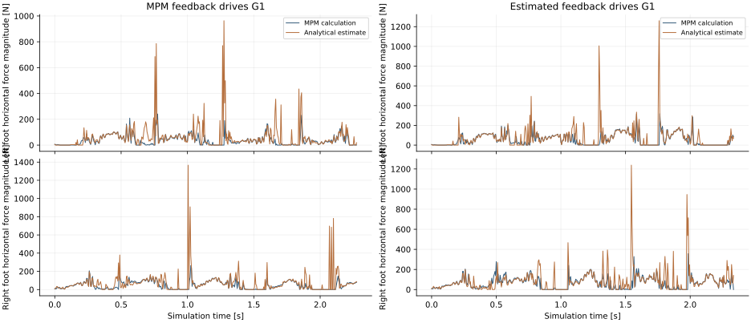
Horizontal force is sqrt(Fx² + Fy²), evaluated within each trajectory. It is separate from vertical support force.
| Trajectory / foot | Force-vector RMSE [N] | Foot-COM torque-vector RMSE [N m] |
|---|---|---|
| reference / left | 114.38 | 6.87 |
| reference / right | 125.75 | 6.64 |
| estimated / left | 106.12 | 7.55 |
| estimated / right | 131.17 | 8.77 |
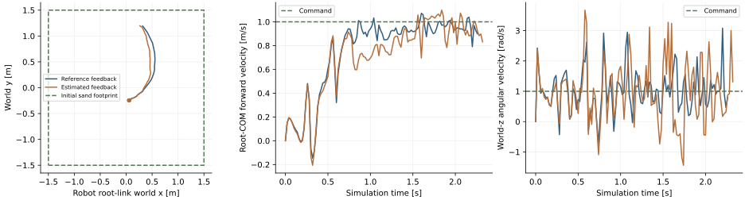
Shared simulation interval 0–3.24 s. The encoded clip includes the final displayed frame. Full reference video · Full estimated-feedback video.
Reference trajectory: mean direct rigid floor/platform vertical support on both feet is 0.0 N during material contact; either foot's rigid-support force magnitude exceeds 20 N in 0.0% of those intervals. Estimated trajectory: mean direct rigid floor/platform vertical support on both feet is 0.0 N during material contact; either foot's rigid-support force magnitude exceeds 20 N in 0.0% of those intervals.
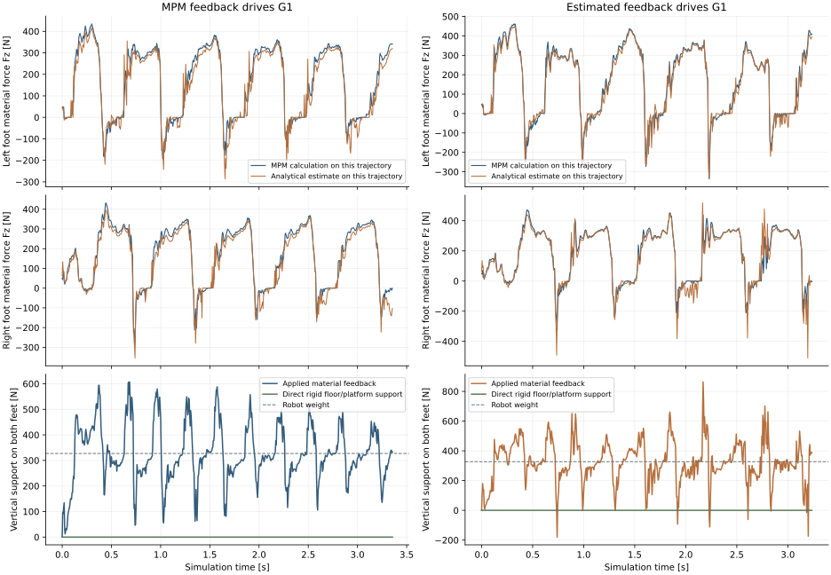
Top rows compare estimated and MPM material-on-foot force within each trajectory. Bottom row separates applied material feedback from direct rigid floor/platform force, sampled after the last rigid substep.
Reference trajectory: largest instantaneous foot-force error 319 N at 1.655 s (left foot); estimated force magnitude 442 N, same-step MPM magnitude 133 N. Estimated trajectory: largest instantaneous foot-force error 516 N at 3.195 s (right foot); estimated force magnitude 531 N, same-step MPM magnitude 15 N.
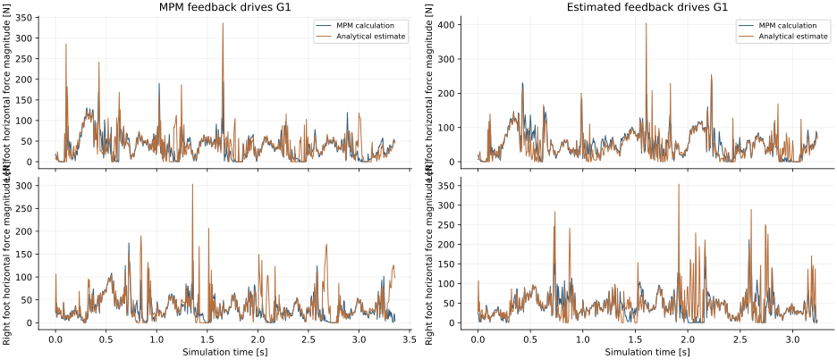
Horizontal force is sqrt(Fx² + Fy²), evaluated within each trajectory. It is separate from vertical support force.
| Trajectory / foot | Force-vector RMSE [N] | Foot-COM torque-vector RMSE [N m] |
|---|---|---|
| reference / left | 52.25 | 4.27 |
| reference / right | 48.49 | 3.80 |
| estimated / left | 42.94 | 3.41 |
| estimated / right | 63.45 | 5.33 |
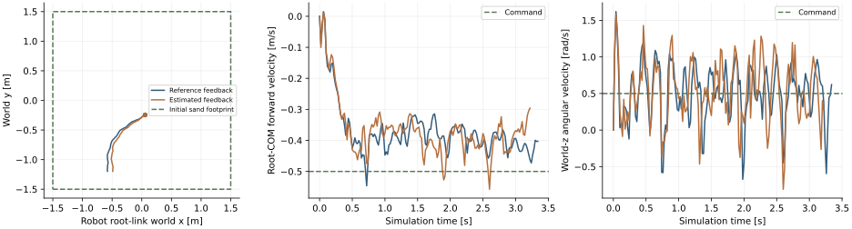
Shared simulation interval 0–8.00 s. The encoded clip includes the final displayed frame. Full reference video · Full estimated-feedback video.
Reference trajectory: mean direct rigid floor/platform vertical support on both feet is 0.0 N during material contact; either foot's rigid-support force magnitude exceeds 20 N in 0.0% of those intervals. Estimated trajectory: mean direct rigid floor/platform vertical support on both feet is 0.0 N during material contact; either foot's rigid-support force magnitude exceeds 20 N in 0.0% of those intervals.
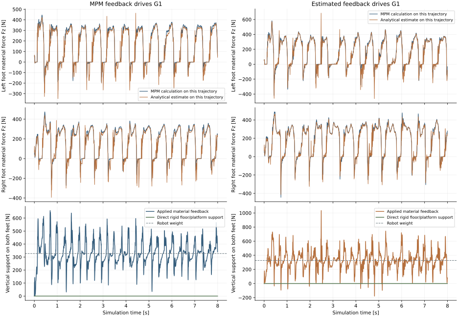
Top rows compare estimated and MPM material-on-foot force within each trajectory. Bottom row separates applied material feedback from direct rigid floor/platform force, sampled after the last rigid substep.
Reference trajectory: largest instantaneous foot-force error 429 N at 3.005 s (left foot); estimated force magnitude 452 N, same-step MPM magnitude 23 N. Estimated trajectory: largest instantaneous foot-force error 582 N at 2.485 s (left foot); estimated force magnitude 693 N, same-step MPM magnitude 121 N.
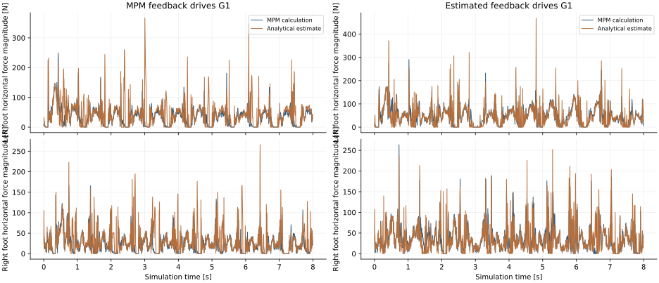
Horizontal force is sqrt(Fx² + Fy²), evaluated within each trajectory. It is separate from vertical support force.
| Trajectory / foot | Force-vector RMSE [N] | Foot-COM torque-vector RMSE [N m] |
|---|---|---|
| reference / left | 61.63 | 4.75 |
| reference / right | 51.45 | 4.27 |
| estimated / left | 55.98 | 4.86 |
| estimated / right | 42.74 | 3.94 |
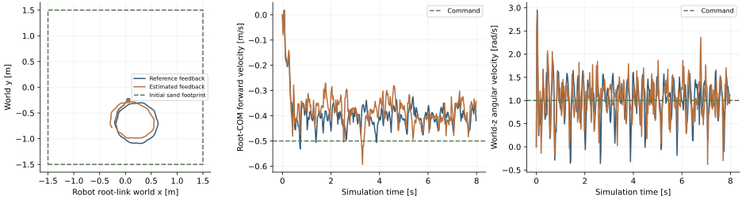
Shared simulation interval 0–2.08 s. The encoded clip includes the final displayed frame. Full reference video · Full estimated-feedback video.
Reference trajectory: mean direct rigid floor/platform vertical support on both feet is 0.0 N during material contact; either foot's rigid-support force magnitude exceeds 20 N in 0.0% of those intervals. Estimated trajectory: mean direct rigid floor/platform vertical support on both feet is 0.0 N during material contact; either foot's rigid-support force magnitude exceeds 20 N in 0.0% of those intervals.
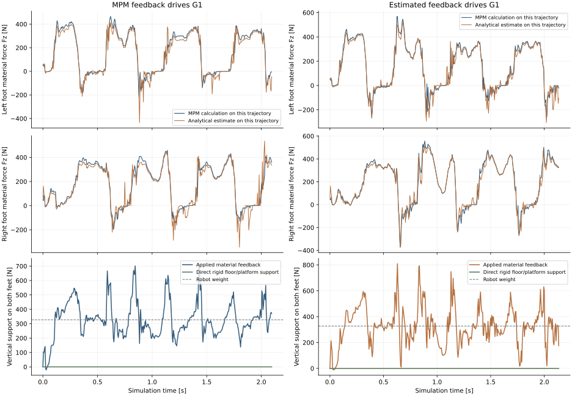
Top rows compare estimated and MPM material-on-foot force within each trajectory. Bottom row separates applied material feedback from direct rigid floor/platform force, sampled after the last rigid substep.
Reference trajectory: largest instantaneous foot-force error 665 N at 1.885 s (right foot); estimated force magnitude 676 N, same-step MPM magnitude 11 N. Estimated trajectory: largest instantaneous foot-force error 745 N at 0.905 s (left foot); estimated force magnitude 767 N, same-step MPM magnitude 27 N.
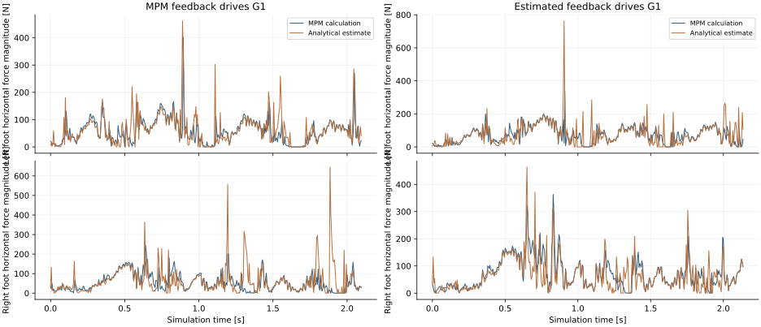
Horizontal force is sqrt(Fx² + Fy²), evaluated within each trajectory. It is separate from vertical support force.
| Trajectory / foot | Force-vector RMSE [N] | Foot-COM torque-vector RMSE [N m] |
|---|---|---|
| reference / left | 66.00 | 6.25 |
| reference / right | 89.61 | 6.53 |
| estimated / left | 75.44 | 7.21 |
| estimated / right | 59.30 | 4.67 |
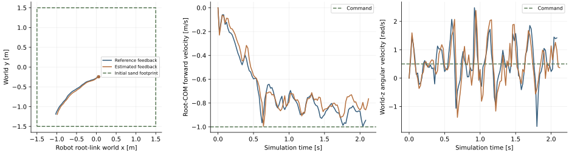
Shared simulation interval 0–1.64 s. The encoded clip includes the final displayed frame. Full reference video · Full estimated-feedback video.
Reference trajectory: mean direct rigid floor/platform vertical support on both feet is 0.0 N during material contact; either foot's rigid-support force magnitude exceeds 20 N in 0.0% of those intervals. Estimated trajectory: mean direct rigid floor/platform vertical support on both feet is 0.0 N during material contact; either foot's rigid-support force magnitude exceeds 20 N in 0.0% of those intervals.
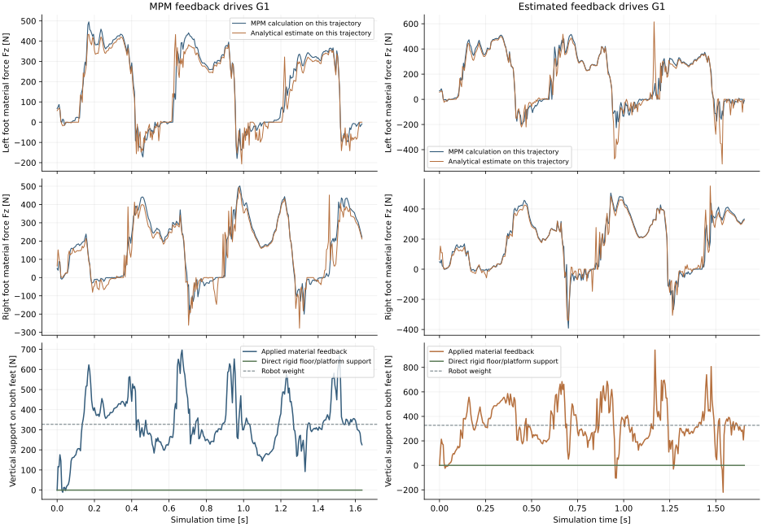
Top rows compare estimated and MPM material-on-foot force within each trajectory. Bottom row separates applied material feedback from direct rigid floor/platform force, sampled after the last rigid substep.
Reference trajectory: largest instantaneous foot-force error 494 N at 1.460 s (right foot); estimated force magnitude 519 N, same-step MPM magnitude 26 N. Estimated trajectory: largest instantaneous foot-force error 722 N at 0.955 s (left foot); estimated force magnitude 819 N, same-step MPM magnitude 119 N.
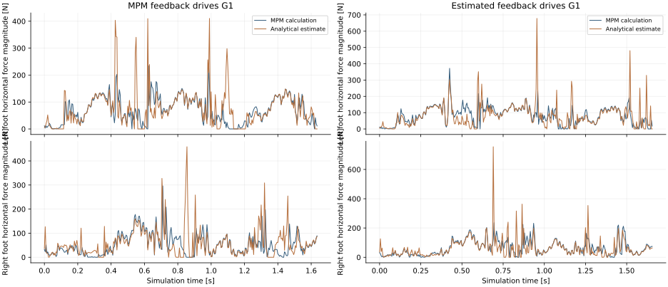
Horizontal force is sqrt(Fx² + Fy²), evaluated within each trajectory. It is separate from vertical support force.
| Trajectory / foot | Force-vector RMSE [N] | Foot-COM torque-vector RMSE [N m] |
|---|---|---|
| reference / left | 75.31 | 5.63 |
| reference / right | 85.49 | 5.94 |
| estimated / left | 95.07 | 8.51 |
| estimated / right | 75.59 | 6.27 |
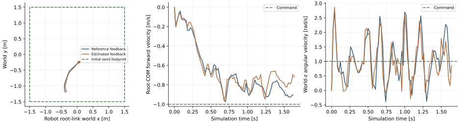
Robot trajectories evolve independently after the identical initial state. Their motion difference describes closed-loop behavior; subtracting their force profiles would not measure estimator error. Direct foot contact with the rigid floor or approach platform is reported separately from material-on-foot forces. Native task termination terms remain active, with the workspace boundary resized to the new sand bed and rigid approach platform. Completing the requested duration can involve direct support from rigid ground beneath the sand or from the approach platform; it does not by itself establish accurate material-force reconstruction.
The two feet use independent virtual-proxy responses rather than the complete articulated contact-response matrix. Native actuation enters the rigid-body free motion before force reconstruction. The effective particle mass multiplier is an exploratory estimator parameter, not a material calibration. CUDA graph capture is disabled for diagnostics. GPU numerical differences can amplify during rollouts. Native replay verifies registered particle geometry and camera before a fixed 16-frame initial warmup; exact pixel equality is only a diagnostic because RTX temporal sampling may differ. These trials use one seed and one sand material. The commands lie within the policy's saved configured ranges (forward velocity −1 to 1.5 m/s; yaw rate −1 to 1 rad/s). This does not establish actual training sample coverage or generalization to the larger beds. A failure under reference feedback also reflects limitations of the policy and task; it cannot be attributed to the estimator alone.